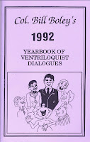

Look what I found
4/4/2009
{kind=link}

Well, I guess it pays to doublecheck inventory from time to time. I came across another of Bill Boley's dialogue books I thought I was out of: 1992 Yearbook of Dialogues.
Dialogue titles: The Magician (figure is a magician); Love Sick (figure is in love); Pay As You Go (all about taxes); Boy Meets Girl (Dialogue to be used with a boy figure and a girl figure at the same time); Smart Alec (about school and learning); plus 35 Funny Newspaper Ads (add several to your favorite routine!). Here's an example:
"Classified Ad: Farmer, aged forty, wants to meet woman around age 3o who owns a tractor. Please enclose picture of the tractor. "
Dialogue titles: The Magician (figure is a magician); Love Sick (figure is in love); Pay As You Go (all about taxes); Boy Meets Girl (Dialogue to be used with a boy figure and a girl figure at the same time); Smart Alec (about school and learning); plus 35 Funny Newspaper Ads (add several to your favorite routine!). Here's an example:
"Classified Ad: Farmer, aged forty, wants to meet woman around age 3o who owns a tractor. Please enclose picture of the tractor. "
(There's any number of ways a joke such as this can be modified to fit your routine! I especially like this one because I was a farmer before I ever heard of ventriloquism. :)
1992 Year Book of Dialogues is among my eBay auctions this week. Click here
1992 Year Book of Dialogues is among my eBay auctions this week. Click here